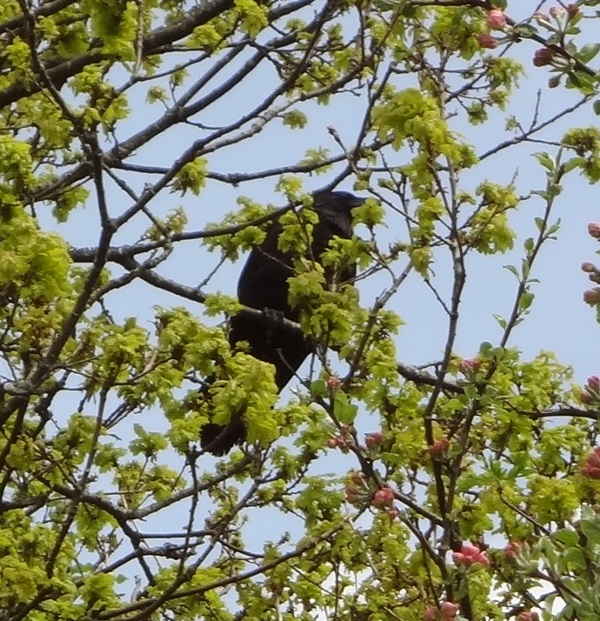
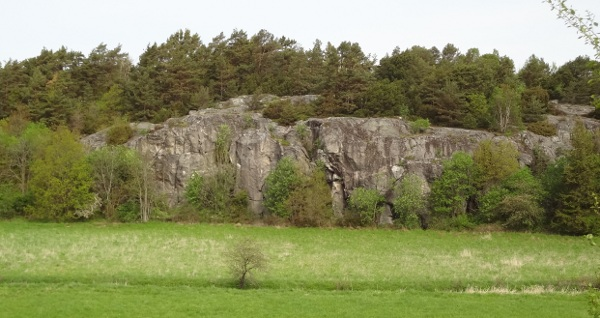
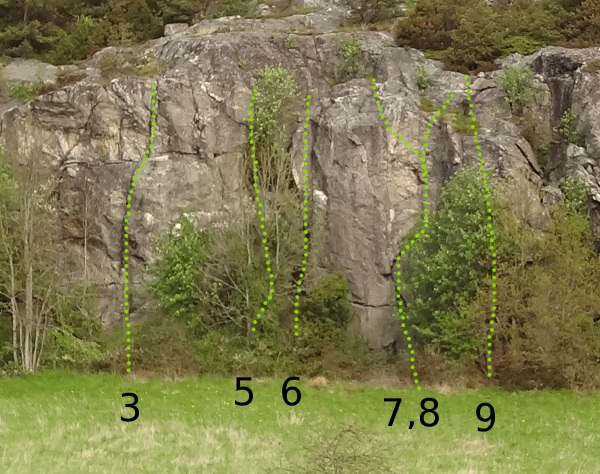

Klippan finns beskriven i Göteborgsföraren under "övriga klippor". Lokala förmågor klättrar här ibland, när det inte finns accessproblem vill säga.
(Informationen i Klättring i Göteborg med omnejd är baserad på informationen ifrån Sverigeföraren).
En till synes bred klippa som bjuder på en handfull mix/tradleder, brant sva, samt en helbultad led. Ligger vid en äng, utom hör- och synhåll ifrån bilväg. Anmarschen är cirka 800 meter. Vänster om denna klippa i skogsdungen finns lite intressanta block och kortare väggar (överhäng).
Det finns fågel på klippan, därför rekommenderas ingen klättring på klippan när fågeln häckar (fågeln häckar på våren har en lokalboende sagt).
Kör väg 155 ifrån Göteborg mot Öckerö. Fortsätt Torslandavägen som byter namn till Kongahällavägen. Kör förbi torget och kyrkan och sväng vänster in på Domarringsgatan. Följ Domarringsgatan ända till Västtrafiks pendelparkering och parkera där (strax efter mataffären). Gå tillbaks längs med Domarringsvägen till Lottkärrsvägen och den stora klippan syns rakt fram. Den vänstra delen av klippan är klättrad och det finns ett hål igenom buskaget för att komma fram till där lederna börjar.
Access:
Den fågel som häckar vid Lottkärrsklippan gör det allt som oftast på samma ställe. Räkna därmed att det häckar fågel vid klippan varje vår (i alla fall i år 2013). Det går inte att ta miste om det är fågel eller inte, i så fall gå någonannanstans. (
Parkera längst ner på Runhällsgatan, eller ta Gul Express till närmsta hållplats och promenera till Runhällsgatan. Klättring längs med början av vägen på vänster sida. Längd på leder är 7-12m.
Access:
Denna klippa ligger mycket nära bostadshus, håll låg profil och parkera lämpligt.
När vi gick ner för berget såg vi en asfaltsväg på höger sida (avspärrad av bom) och följde denna en kort bit upp till en äng, på andra sidan ängen hittade vi en till repklippa, ca 15 meter hög.....
Kategori:sport
Kategori:mix
Kategori:sva
kategori:Saknar skiss
kategori:Saknar vägbeskrivning
kategori:Saknar leder
kategori:Saknar koordinater
kategori:Saknar skrivarformatering
Category:Göteborg
Copyright (C) Permission is granted to copy, distribute and/or modify this document under the terms of the GNU Free Documentation License, Version 1.3